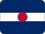

Suriname
Part of
 Brazil
BrazilShort facts
RegionNorthern South America
LanguageDutch
Time zoneSRT (UTC-3)
Drives onLeft
Worth seeing
- Central Suriname Reserve: UNESCO rainforest reserve covering nearly 12% of the country, one of the world's last pristine tropical forests.
- Paramaribo: Unique wooden colonial city blending Dutch, African, and Asian architecture, UNESCO-listed.
- River Expeditions: Multi-day canoe trips on the Suriname River into deep jungle.
Planning questions
What is Suriname known for?Central Suriname Reserve, Paramaribo, River Expeditions.
What is the capital?Paramaribo.
Which language is useful?Dutch.
When is the national day?25 November.
How should I browse it here?Start with the facts, jump to linked cities, then check events and topics.
Upcoming events
No future Suriname-linked events are active in the current dataset.
Food & drink
 Street food
Street food Coffee
CoffeeKnown for
Central Suriname ReserveParamariboRiver ExpeditionsParamariboStreet foodCoffee
 Music & Culture
Music & Culture Amazon and wild nature
Amazon and wild nature